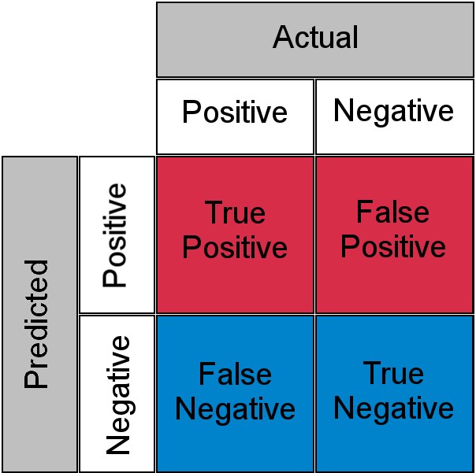

Security test results can provide evidence in support of various
specific objectives. These objectives include enhancement of the security posture of
the application (e.g., reduction of application’s attack surface) and compliance
with security regulations and information security standards.
Objectives
Explain the security implications of test results.
Differentiate the types of test results.
Overview
Analyzing security test results can help provide an initial
measure of risk. Test results impact product management and remediation
prioritization. Security checks must be performed at various checkpoints during the
build process.
Measure of Risk
Adopting short-term strategies in favor of development speed and
taking shortcuts during development can result in the accumulation of unaddressed
security issues and increase the security technical debt.
Analyzing security test results can help provide an initial
measure of risk. A measure of risk (i.e., high, medium, low) for the vulnerabilities
identified during security testing can be calculated by considering likelihood and
impact and by validating the vulnerability findings with penetration tests.
The risk metrics associated with vulnerabilities found during
security testing can enhance risk management decisions, including the decision to
mitigate or accept the risk for business or technical reasons.
When evaluating the security posture of an application, it is
important to take into consideration certain factors, such as the size of the
application. Application size has been statistically proven to be related to the
number of issues found in the application during testing. One measure of application
size is the number of lines of code (LOC). Generally, the larger the application,
the larger the number of defects.
Implications of Security Test
Results
Security test results provide an insight into the overall
security posture of the software. Additionally, test results can produce evidence in
support of compliance with policies, regulations, and standards.
Impact on Product Management
Stakeholders with significant interest in and reliance on
security test results include the product management team. This is true considering
the broad product management responsibilities and the fact that security test
activities are primarily performed to validate a system’s conformance to security
requirements.
Remediation Prioritization
When security testing results reveal security flaws and
vulnerabilities in software, the product team, in coordination with other
stakeholders (e.g., business), needs to prioritize the remediation efforts. Various
factors could impact the prioritization of remedies/fixes with a few of the
following:
Risk associated with likelihood and resulting impact from exploitation.
Severity and criticality of a vulnerability.
Affected users.
Efforts involved in remediation.
Break Build Criteria
Aside from the obvious reason for a break in the build process
due to the inability to compile the code, the software build process may be broken
due to several other reasons.
Software builds may also be broken when security checks are
performed at various checkpoints during the build process. This necessitates the
clear definition and establishment of pass/fail conditions and criteria.
A good example would be the breaking of the build in the CI/CD
pipeline to treat security issues with the same level of importance as quality and
business requirements, and requiring the issues to be addressed through appropriate
activities (e.g., trigger code review).
Types of Results
Efficient and comprehensive testing relies on the understanding
of the test data outputs. The following are some considerations when analyzing test
results.
Type I and Type II Errors
Software test plans (STP) should include criteria or thresholds
that determine if the test is successful before it is executed. Consider the example
of executing a nonfunctional static analysis tool against a recently developed API.
First, an organization should provide policy guidance stating what should be scanned
for and what conditions are unsatisfactory. Perhaps something like the following:
“All source code shall be subject
to static analysis and determined reasonable free of MITRE CWE Top 25 before
commits can be made into the main source branch.”
Second, static analysis would need to be implemented into gated
check-in and preconfigured to check for a known set of defects such as MITRE CWE Top
25. Finally, an attempt to commit the new API to the main branch in the repository
would automatically execute the static analysis. Pending the results, the code would
be committed or rejected.
However, sometimes processes and testing are more complicated.
How do we know there were no defects from the MITRE CWE Top 25? Suppose CWE-787:
Out-of-bounds Write is not included in the checks for the static analysis
tool. Or worse yet, the tool fails to identify CWE-787 as indicated. In both cases,
it would be possible to have false negatives, also known as Type II errors in
statistics. may be detected by
validating the coverage of the present static analysis tool with alternate tools.
Likewise, it is possible that our static analysis tool produces
many findings for CWE-20: Improper Input Validation that are all incorrect.
When testing produces an issue that is a non-issue, the result is said to be a false
positive, which is also referred to as a . Manual review of test
results can determine the validity of findings. Type II errors are typically
considered worse. Security practitioners cannot ameliorate unknown issues. Another
way to classify test results post review would be predicted vs actual, as shown
below.

Figure 11: False Positives and Negatives
Accuracy vs Precision
In addition to the potential for error within test results,
there are also varying levels of accuracy and precision. Accuracy and precision are
unfortunately used interchangeably in communications, but they are distinctly
different and have implications on test results. Accuracy describes how close a test
measurement is to correct value. Precision describes how close a sample of test
results are relative to each other.
From earlier, consider static analysis results that always
incorrectly report CWE-20 defects to be precise but not accurate. If three or true
positive defects were all reported as CWE-20 when they were really three different
CWEs, that would be considered accurate but not precise. The figure below
illustrates accuracy and precision as being mutually exclusive using a target board
and makes the concept easier to grasp.
Security Implications of Test Results (6.5)
Security test results can provide evidence in support of various specific objectives. These objectives include enhancement of the security posture of the application (e.g., reduction of application’s attack surface) and compliance with security regulations and information security standards.
Objectives
Overview
Analyzing security test results can help provide an initial measure of risk. Test results impact product management and remediation prioritization. Security checks must be performed at various checkpoints during the build process.
Measure of Risk
Adopting short-term strategies in favor of development speed and taking shortcuts during development can result in the accumulation of unaddressed security issues and increase the security technical debt.
Analyzing security test results can help provide an initial measure of risk. A measure of risk (i.e., high, medium, low) for the vulnerabilities identified during security testing can be calculated by considering likelihood and impact and by validating the vulnerability findings with penetration tests.
The risk metrics associated with vulnerabilities found during security testing can enhance risk management decisions, including the decision to mitigate or accept the risk for business or technical reasons.
When evaluating the security posture of an application, it is important to take into consideration certain factors, such as the size of the application. Application size has been statistically proven to be related to the number of issues found in the application during testing. One measure of application size is the number of lines of code (LOC). Generally, the larger the application, the larger the number of defects.
Implications of Security Test Results
Security test results provide an insight into the overall security posture of the software. Additionally, test results can produce evidence in support of compliance with policies, regulations, and standards.
Impact on Product Management
Stakeholders with significant interest in and reliance on security test results include the product management team. This is true considering the broad product management responsibilities and the fact that security test activities are primarily performed to validate a system’s conformance to security requirements.
Remediation Prioritization
When security testing results reveal security flaws and vulnerabilities in software, the product team, in coordination with other stakeholders (e.g., business), needs to prioritize the remediation efforts. Various factors could impact the prioritization of remedies/fixes with a few of the following:
Break Build Criteria
Aside from the obvious reason for a break in the build process due to the inability to compile the code, the software build process may be broken due to several other reasons.
Software builds may also be broken when security checks are performed at various checkpoints during the build process. This necessitates the clear definition and establishment of pass/fail conditions and criteria.
A good example would be the breaking of the build in the CI/CD pipeline to treat security issues with the same level of importance as quality and business requirements, and requiring the issues to be addressed through appropriate activities (e.g., trigger code review).
Types of Results
Efficient and comprehensive testing relies on the understanding of the test data outputs. The following are some considerations when analyzing test results.
Type I and Type II Errors
Software test plans (STP) should include criteria or thresholds that determine if the test is successful before it is executed. Consider the example of executing a nonfunctional static analysis tool against a recently developed API. First, an organization should provide policy guidance stating what should be scanned for and what conditions are unsatisfactory. Perhaps something like the following:
“All source code shall be subject to static analysis and determined reasonable free of MITRE CWE Top 25 before commits can be made into the main source branch.”
Second, static analysis would need to be implemented into gated check-in and preconfigured to check for a known set of defects such as MITRE CWE Top 25. Finally, an attempt to commit the new API to the main branch in the repository would automatically execute the static analysis. Pending the results, the code would be committed or rejected.
However, sometimes processes and testing are more complicated. How do we know there were no defects from the MITRE CWE Top 25? Suppose CWE-787: Out-of-bounds Write is not included in the checks for the static analysis tool. Or worse yet, the tool fails to identify CWE-787 as indicated. In both cases, it would be possible to have false negatives, also known as Type II errors in statistics. may be detected by validating the coverage of the present static analysis tool with alternate tools.
Likewise, it is possible that our static analysis tool produces many findings for CWE-20: Improper Input Validation that are all incorrect. When testing produces an issue that is a non-issue, the result is said to be a false positive, which is also referred to as a . Manual review of test results can determine the validity of findings. Type II errors are typically considered worse. Security practitioners cannot ameliorate unknown issues. Another way to classify test results post review would be predicted vs actual, as shown below.
Figure 11: False Positives and Negatives
Accuracy vs Precision
In addition to the potential for error within test results, there are also varying levels of accuracy and precision. Accuracy and precision are unfortunately used interchangeably in communications, but they are distinctly different and have implications on test results. Accuracy describes how close a test measurement is to correct value. Precision describes how close a sample of test results are relative to each other.
From earlier, consider static analysis results that always incorrectly report CWE-20 defects to be precise but not accurate. If three or true positive defects were all reported as CWE-20 when they were really three different CWEs, that would be considered accurate but not precise. The figure below illustrates accuracy and precision as being mutually exclusive using a target board and makes the concept easier to grasp.
Figure 12: Accuracy vs Precision